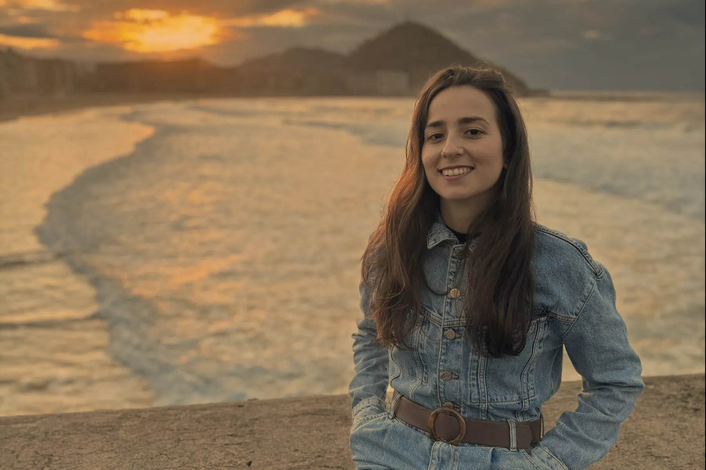
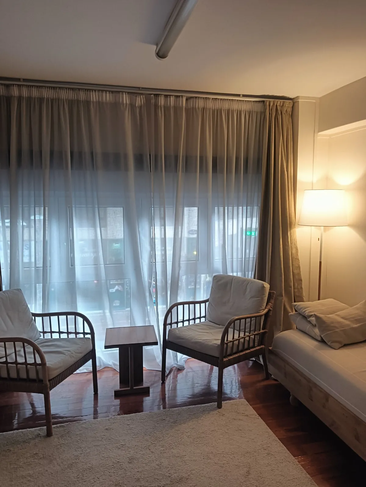
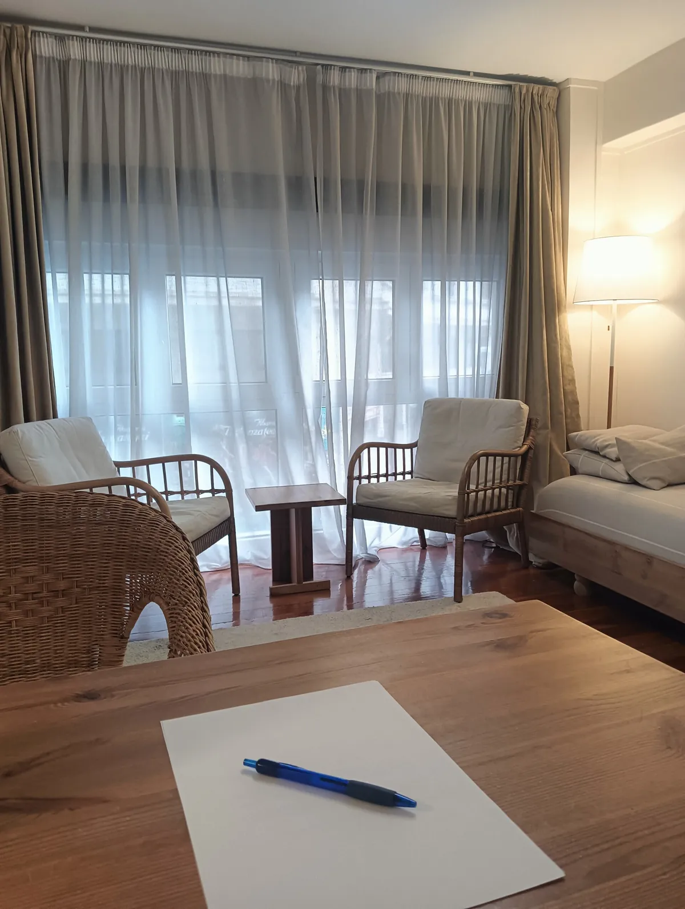
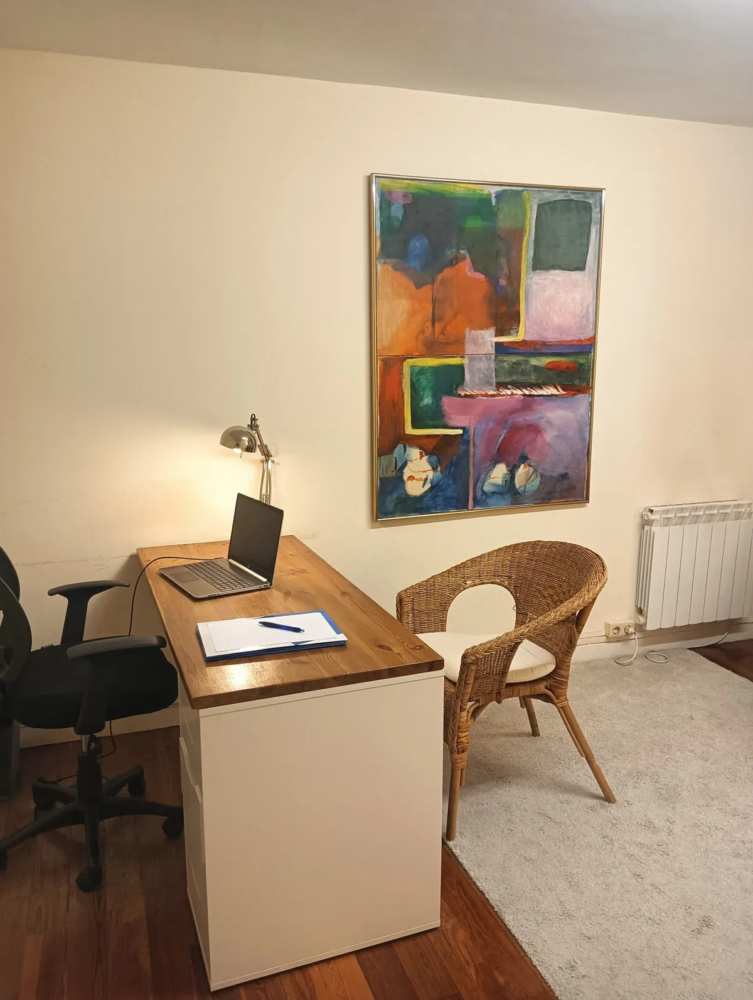
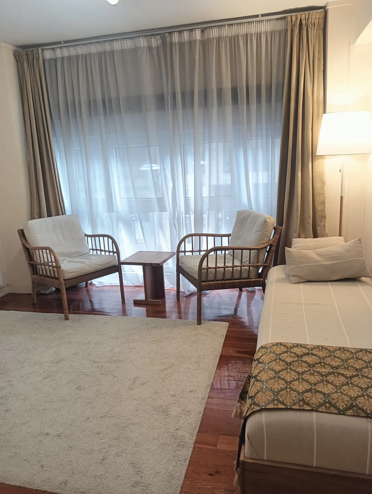
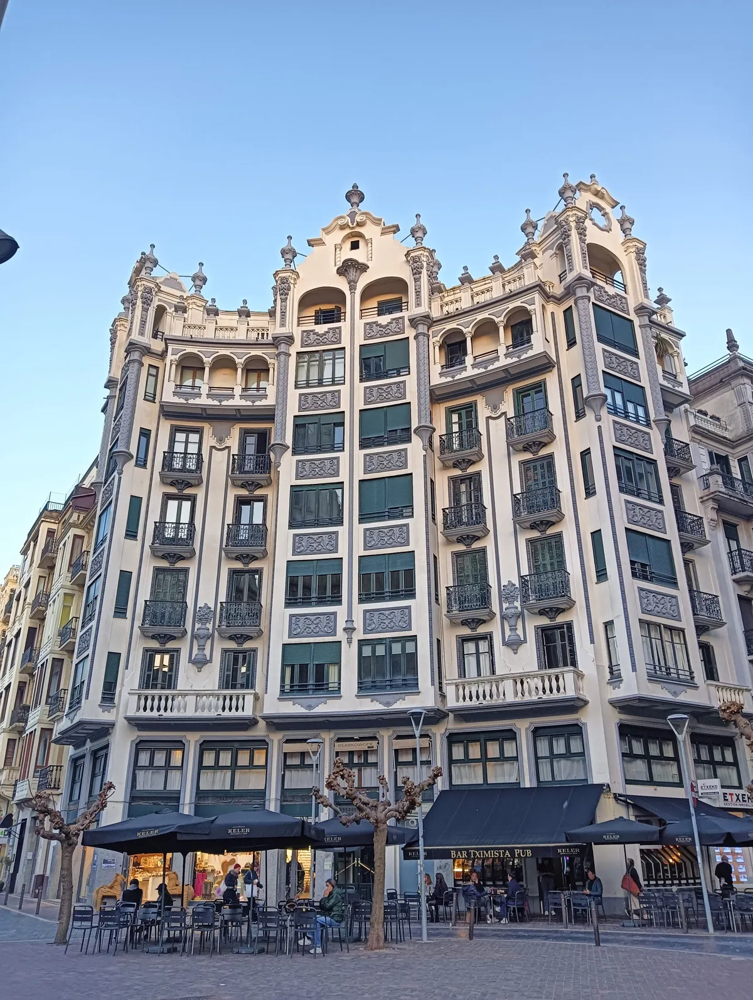
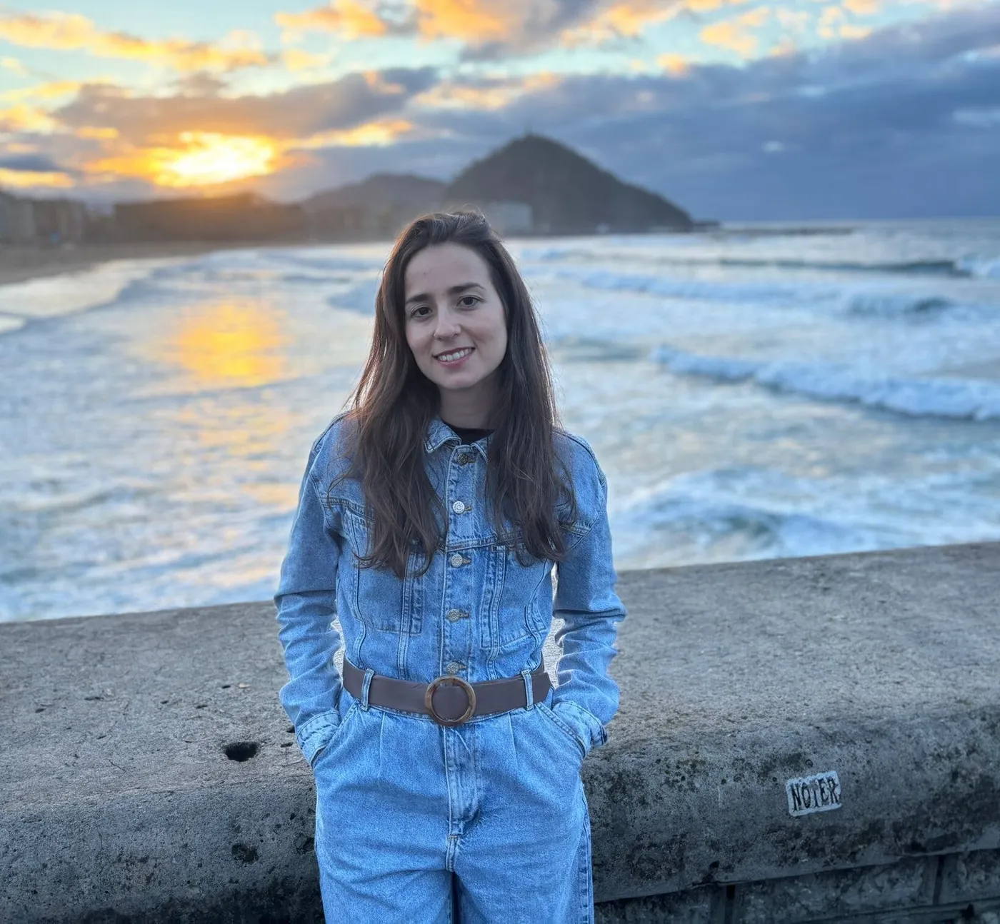
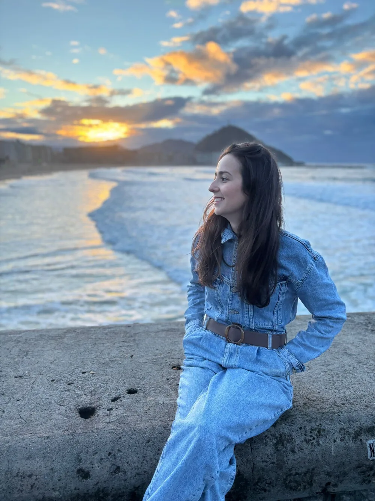
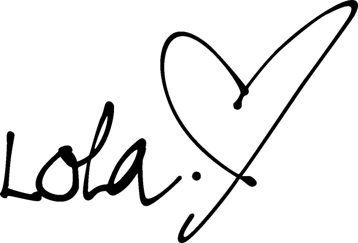

Un lugar donde parar y escucharte
Acudir a terapia es una oportunidad: un lugar seguro donde comprender lo que te pasa y cuidarte desde el respeto y la amabilidad contigo mismo/a.
La maraña
A veces, la vida nos coloca ante situaciones que nos desafían emocionalmente.
¿Con qué puedo acompañarte?
Cada persona es única y, por ello, cada proceso terapéutico también lo es. Estos son algunos de los motivos por los que se acude a consulta.
Tu espacio de terapia psicológica en el barrio de Gros
Ofrezco psicoterapia presencial en Donostia - San Sebastián, en pleno barrio de Gros, y también online desde cualquier parte. Un espacio tranquilo y muy bien comunicado, tanto para quien vive en la ciudad como para quien se desplaza desde Errenteria, Pasaia, Hernani o Lasarte.



Un lugar tranquilo
para sentarte a hablar



Si lo deseas, podemos conocernos en una primera sesión gratuita.
Agendar primera cita →Un proceso terapéutico a tu medida
Cada persona es única y, por ello, cada proceso terapéutico también lo es. Trabajamos contigo para crear un plan de tratamiento personalizado que te guíe a conseguir tus objetivos hacia el bienestar emocional.
Terapia presencial en San Sebastián - Donostia (Gros) y online desde cualquier parte. Las sesiones duran aproximadamente 50 minutos.
- Ansiedad
- Pensamientos obsesivos
- Fobias (miedos, bloqueos)
- Bajo estado de ánimo y depresión
- Dependencia emocional
- Relaciones: dificultades en la pareja, divorcios o rupturas, problemas familiares, amistades
- Autoexigencia y perfeccionismo invalidantes
- Baja autoestima
- Autoimagen y relación con el cuerpo y la comida
- Experiencias traumáticas: abordaje de trauma y trauma complejo
- Afrontamiento del duelo (pérdidas o rupturas)
- Trastornos adaptativos: recuperar el equilibrio tras situaciones con impacto emocional
- Acompañamiento en enfermedades autoinmunes o psicosomáticas
- Estrés académico (exámenes, selectividad, oposiciones)
- Crisis vitales: nacimientos, divorcio, emancipación de los hijos, jubilación
- Discusiones frecuentes o conflictos repetitivos
- Dificultades en la convivencia
- Desconexión emocional o íntima
- Infertilidad
- Sensación de soledad dentro de la pareja
- Dificultades en la comunicación
- Cambios vitales importantes: nacimientos, duelos, mudanzas
- Celos, desconfianza o resentimiento
- Infidelidades o rupturas de la confianza
- Conflictos por la crianza de los hijos
- Sensación de rutina y monotonía en la relación
- Mejorar el vínculo emocional y superar obstáculos
- Desarrollo de estrategias y herramientas para una mejor gestión emocional
- Fomentar la resiliencia, la autoestima y el autocuidado para alcanzar una vida más plena y equilibrada
- Momentos de cambio y nuevos proyectos
- Estrés y toma de decisiones importantes
- Otros desafíos personales
El bienestar no se reduce únicamente a la ausencia de malestar: también acompaño a personas que, más allá de la sintomatología clínica, buscan apoyo en su desarrollo personal o en el afrontamiento de crisis vitales.
- Diseño de talleres para empresas o grupos sobre temáticas específicas como gestión emocional, resiliencia y afrontamiento del estrés
- Escuelas para familias de adolescentes
- Divulgación para diferentes medios de comunicación: prensa, TV y radio
Si te interesa, cuéntame en qué estás pensando y lo valoramos.
Psicóloga psicoterapeuta en Donostia
Confío en la capacidad de resiliencia y cambio que las personas poseemos. Esa confianza guía mi manera de acompañar a quienes acuden a consulta.

Soy Lola Inchaurralde Sancha, psicóloga colegiada por el Colegio Oficial de Psicología de Gipuzkoa (Col. nº GZ30522) y anteriormente miembro del Col·legi Oficial de Psicologia de Catalunya.
Hace más de 10 años que inicié mi trayectoria acompañando a personas a transitar situaciones emocionalmente complejas.
Como psicoterapeuta, cuento con una sólida experiencia. He tratado una variedad de casos y en distintos recursos terapéuticos, desde centros ambulatorios hasta hospitalarios. A su vez, dirigiendo grupos de terapia y talleres psicoeducativos enfocados en diferentes objetivos. Desarrollando los primeros 10 años de mi carrera profesional en Barcelona.
Actualmente, centro mi labor principalmente en la práctica privada, en San Sebastián - Donostia y online.
Me encanta compartir experiencias y divulgar conocimientos. He colaborado en medios de comunicación como televisión, radio y redes sociales. También he participado como docente con alumnos en formación de máster.
Me considero una persona creativa, sensible y entusiasta de mi profesión. Doy importancia a la integridad y a ser coherente con lo que transmito; por eso invierto en formación continua para seguir creciendo y ofrecer una atención de calidad.
Creo firmemente en el vínculo terapéutico y en el encuentro humano como pilares fundamentales de la psicoterapia; es en esa conexión donde, muchas veces, surgen los cambios más significativos.
Para mí será un honor poder acompañarte en este proceso.

Tarifas claras, sin sorpresas
Estas son las tarifas actuales para los servicios ofertados. Las sesiones de terapia tienen una duración aproximada de 50 minutos.
Nos comprometemos a brindar un servicio de calidad y profesional, adaptado a tus necesidades.
¿Trabajas con compañías de seguros médicos privados?
Actualmente no tengo convenio con compañías de seguros médicos privados. No obstante, algunas aseguradoras ofrecen pólizas con cobertura de reembolso, que permiten acudir al profesional sanitario de tu elección y recuperar posteriormente una parte del coste de las sesiones. Si dispones de un seguro de salud privado, te recomiendo consultar con tu compañía si esta modalidad está incluida en tu póliza y cuáles son las condiciones aplicables.
¿Cuánto dura una sesión?
Las sesiones de terapia tienen una duración aproximada de 50 minutos. La primera sesión orientativa es de 20 minutos y es gratuita.
¿Las sesiones son presenciales u online?
Ofrezco psicoterapia presencial en mi consulta del barrio de Gros (Donostia - San Sebastián) y también online, desde cualquier parte, si lo prefieres.
Estoy aquí para responder a tus preguntas y ayudarte a comenzar el camino.
Empezar terapia
Si lo deseas, puedes contactarme y agendar una primera sesión de psicología orientativa gratuita de 20 minutos para conocernos y valorar tu caso.
Esta página no existe
Se ve que aquí no había nada. No pasa nada: volvemos al principio.
Volver al inicio →